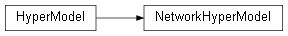

src.nn_library.nn_hyper_model
Module Contents
Classes
Class to manage Keras Hyper Model structure. |
- class src.nn_library.nn_hyper_model.NetworkHyperModel
Bases:
kerastuner.HyperModelClass to manage Keras Hyper Model structure.
- fit(self, hp, model, *args, **kwargs)
Function to overwrite tensorflow fit function.
- build(self, hp)
Function to define keras hyper model, a model which hyper-parameters are defined by ex. list of variables. Which are further used in hyper-parameters tuning stage.
- Parameters
hp – HyperParameters object
- Returns
HyperModel object